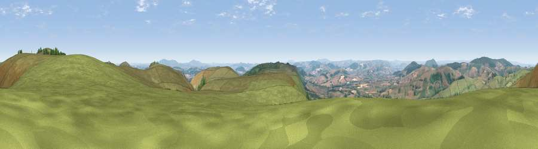

Viewpoint near Asterton
#3015 in England · top 8% of its area beats it · near Asterton · access?Where it is
The exact computed spot (SO 40775 93225). Click the marker for map links.
Public access: no public right of way or access land is recorded at this exact spot — it may be on private land. Computed from Natural England's CRoW access layer and OpenStreetMap rights of way — not the legal definitive map. Always verify locally.
The view, rendered

A 360° render of this exact spot computed from the terrain model, tree cover and land cover — summer colours, afternoon light, calibrated against photographs of famous viewpoints. Real trees, hedges and buildings will differ in detail.
The panorama
Grey silhouette: terrain skyline in each direction (720 bearings, Earth curvature and refraction included). Dashed green: skyline with trees (+15 m) and buildings (+8 m) as obstacles. Blue strip: how far the ground is visible on each bearing.
Where the view opens
Wedge length = distance to the farthest visible ground on that bearing (vegetation-aware). Rings at 10, 25 and 50 km.
What fills the view
85% grassland · 10% woodland · 5% cropland
Angular shares of the visible panorama (visual magnitude), not map area. Landscape diversity 0.23 (0–1 Shannon).
Key numbers
More beautiful places nearby
The staircase of upgrades: each row has a higher view potential than everything closer. Driving times are estimates from straight-line distance, calibrated against real road routing — check an actual route before setting out.
| Place | Direction | Drive | Score |
|---|---|---|---|
| Pole Bank | NNE · 1 km | ~4 min | 74.7 |
| Viewpoint near Asterton | SSW · 4 km | ~8 min | 76.0 |
| Viewpoint near Asterton | SSW · 4 km | ~9 min | 79.6 |
| Viewpoint near Asterton | SSW · 5 km | ~10 min | 83.0 |
| The Lawley | ENE · 10 km | ~19 min | 85.8 |
| Viewpoint near Little Wenlock | NE · 26 km | ~42 min | 86.6 |
| North Hill | SE · 59 km | ~81 min | 86.8 |
| Worcestershire Beacon | SE · 60 km | ~82 min | 87.1 |
52.53365, -2.87454 · source: screening · position refined by local search. Computed location — check access rights before visiting.